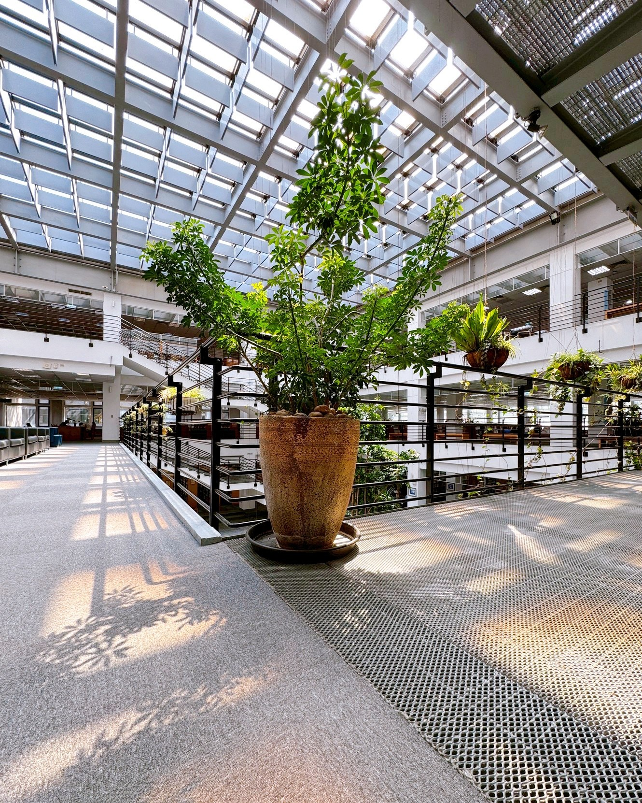

Station 5: Space and Courtyard Landscaping
The architectural design of Yuan Ze University Library adopts a terraced structure, making the space feel more open and fluid.
The central atrium features a skylight that brings in natural light, complemented by large windows on all four sides.
Lush greenery and landscaping create a bright, transparent, and harmonious natural atmosphere.
This area is not just an architectural space—it resembles a painting composed of light and greenery, and has become one of the most popular photo spots in the library.